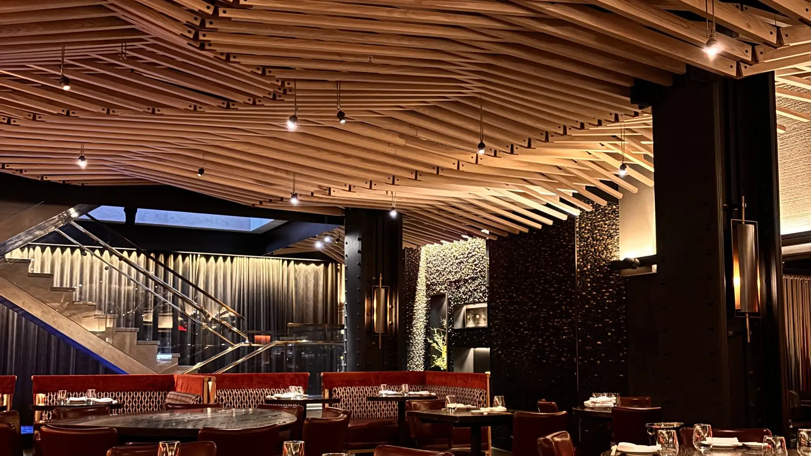
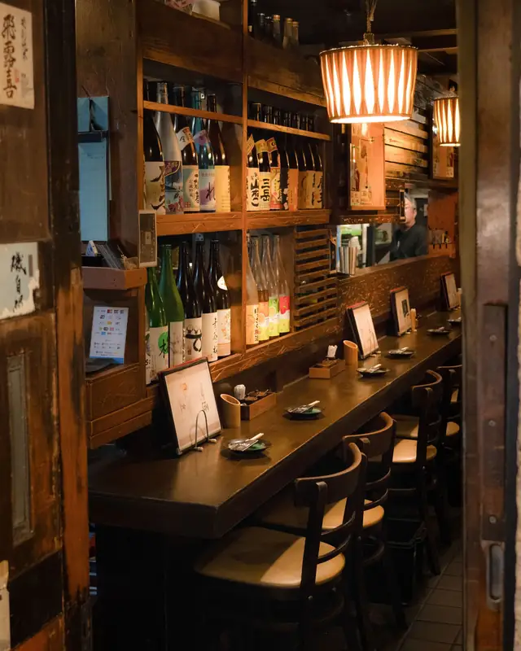
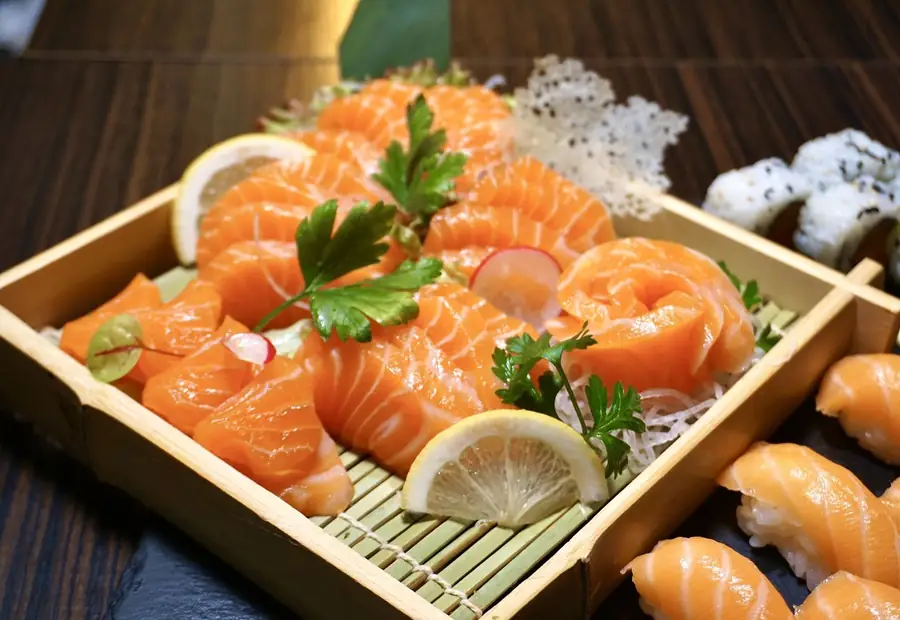
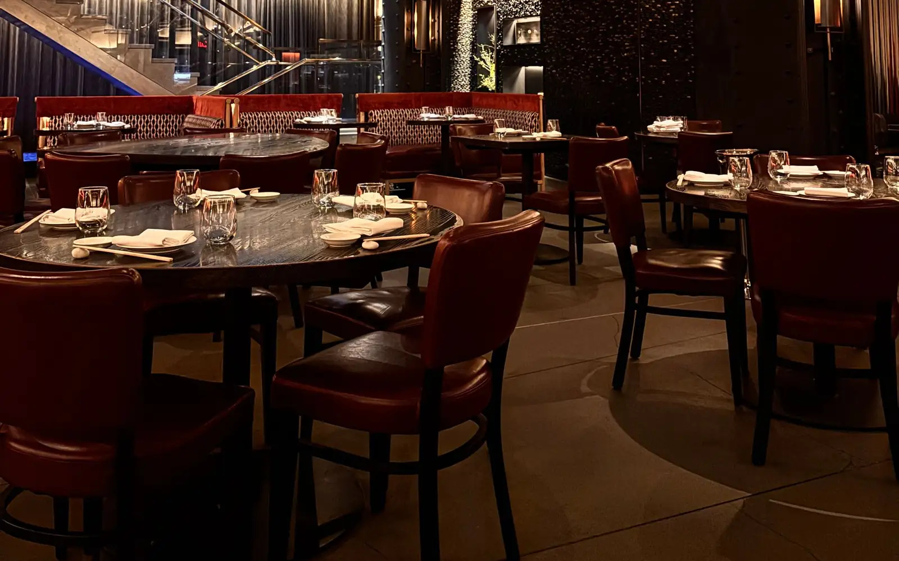
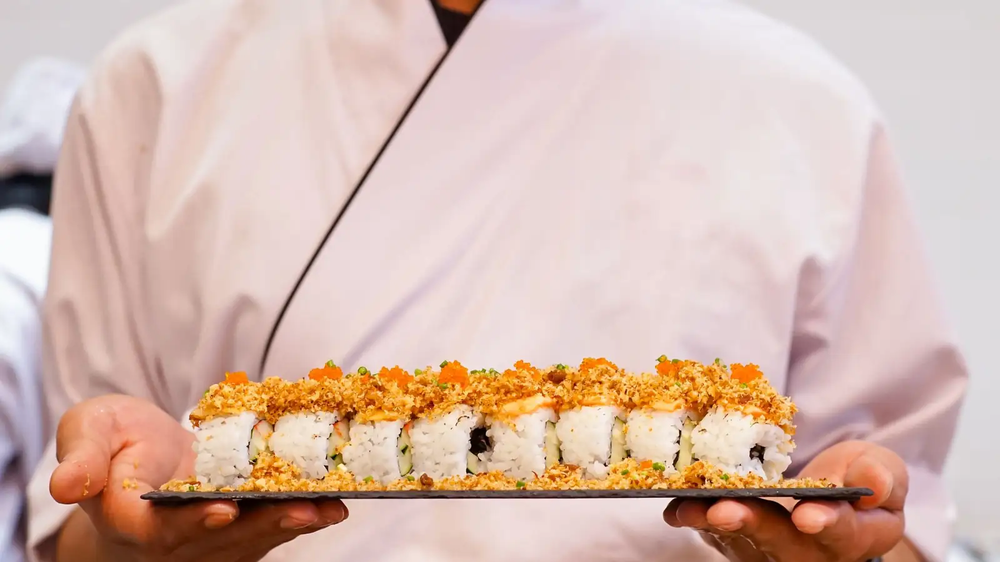
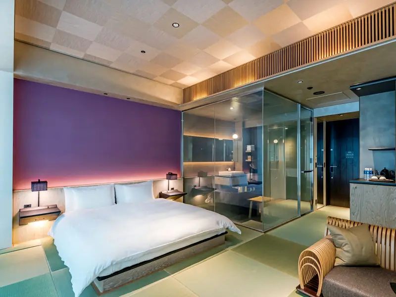
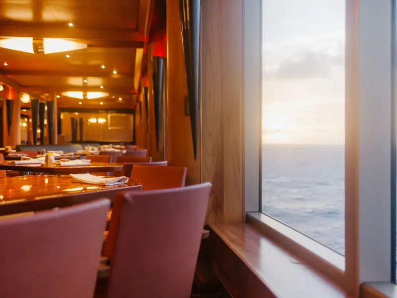
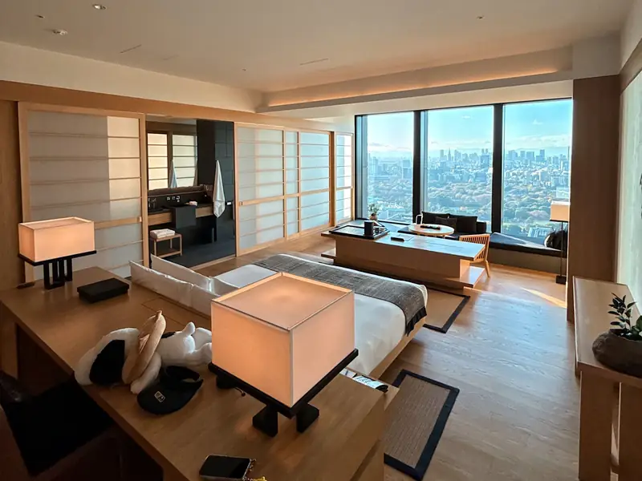

Appena aperto
Kaede Wien
Dal 9 ottobre siamo sul Kohlmarkt, a due passi dalla Hofburg. Un banco di dodici posti, una sala sotto le volte e la stessa carta di Roma, con il pesce dell'Adriatico che arriva ogni mattina.

Appena aperto
Dal 9 ottobre siamo sul Kohlmarkt, a due passi dalla Hofburg. Un banco di dodici posti, una sala sotto le volte e la stessa carta di Roma, con il pesce dell'Adriatico che arriva ogni mattina.

In arrivo
La sede d'inverno riapre sabato 5 dicembre, ai piedi delle Tofane: sake caldo, nabe e la terrazza al sole di mezzogiorno.

A pranzo
Ogni giorno, dalle 12:30 alle 15:00, il Pranzo Kaede: tre portate dal banco e dalla cucina calda, servite in un'ora.
La casa madreVia Ludovisi 21, dal 2009

La casa madre
Sushi bar di quattordici posti, la sala grande e la terrazza all'ultimo piano. Qui nasce ogni piatto che poi viaggia nelle altre sedi.
La famiglia
Undici tavole, una cucina. Scegli una regione, cerca una città o guarda chi è aperto adesso: ogni sede si prenota da qui.
11 sedi
Nessuna sede corrisponde.

In primo piano
Hiroshi Kanda è arrivato a Roma nel 1998 con due coltelli e un quaderno di ricette di Osaka. Dieci anni di mercati, tra Fiumicino e Mazara del Vallo, gli hanno insegnato che il pesce italiano non chiede di essere tradotto: chiede tempo, riso giusto e poco altro. Lo stile Kaede si riconosce da cinque cose.
Piatti firma
Alla prima visita lo chef consiglia di sceglierne almeno tre: si comincia dai crudi, si passa al caldo, si chiude col sushi.
01 / 08
Esperienze
Residenze Kaede
In tre sedi il ristorante ha qualche camera ai piani alti: poche, silenziose, con la colazione giapponese servita in camera. Chi dorme da noi ha sempre un tavolo per la cena.

Italia
9 camere · da € 420

Italia
6 camere · da € 480

Francia
12 camere · da € 510
La Tavola Nuova
«Il crudo più preciso di Roma, servito come una cena di famiglia.»
Viaggi & Sapori
«Undici sedi e nessuna fotocopia: a Cortina il nabe vale il viaggio.»
Notte Magazine
«La terrazza sopra Via Ludovisi è il miglior posto per un highball dopo le undici.»
Prenotazioni
Prenotazione confermata